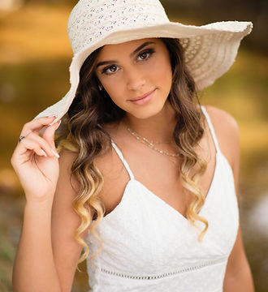

because you're
only a senior once.
Emily Kathryn Photography is a once-in-a-lifetime portrait experience for high school seniors and the families they love — designed to make you feel confident and proud of how your photos represent who you are and the year you've worked so hard for.
The full EKP experience — wardrobe, locations, light, and posing built around you. Editorial sessions for the seniors who want their year to mean something.
Soft, warm, intentional family portraits made for the milestones — and for the walls of your home, not a folder on your phone.
Hi, I'm Emily.
Wife, mom, and senior photographer based in Gretna, Virginia. I grew up with a camera in my hands and have spent the last twelve years building EKP into the experience I'd want for my own daughters — soft, slow, full of light, and made entirely for the wonderful person in front of the camera.
Nothing makes me happier than taking a stunning image of a senior, then turning the camera around to show her just how beautiful she is.
Read My StoryThe Portfolio





What it's like.
Inquire
Send a quick note and I'll reply with a Senior Magazine — packed with details, pricing, and sample images.
Plan
We chat about your vision, finalize wardrobe, and lock in the locations and look that fit your style.
Shoot
Your session day — relaxed, fun, never rushed. No stress allowed. I'll guide you through every pose.
Reveal
An in-person reveal & ordering session with all your retouched images and heirloom-quality products.
"My daughter's one wish for her senior year was to have Emily take her senior pictures. We have admired her incredible work for several years and to finally get the chance to experience it ourselves was amazing! A wonderful experience."
Sometimes you don't know the value of a moment
until it becomes a memory.
Spring & Summer 2026 sessions are booking now. Tell me a little about your senior, your family, or the look you've been dreaming up — and I'll send back a full pricing guide and current availability.
Begin Your Inquiry